<!--##############################################################################################################
DO:
./start_remote.sh (im Presentationsordner)

oder

╔[/var/www/html/beispielpresi/master]
╚>$ node plugin/multiplex


https://github.com/D0gi/reveal.js
##################################################################################################################
-->


<!doctype html>
<html lang="en">

<head>
	<meta charset="utf-8">

	<title>Verteidigung</title>

	<meta name="description" content="A framework for easily creating beautiful presentations using HTML">
	<meta name="author" content="Hakim El Hattab">

	<meta name="apple-mobile-web-app-capable" content="yes" />
	<meta name="apple-mobile-web-app-status-bar-style" content="black-translucent" />

	<meta name="viewport" content="width=device-width, initial-scale=1.0, maximum-scale=1.0, user-scalable=no, minimal-ui">

	<link rel="stylesheet" href="css/reveal.css">
	<link rel="stylesheet" href="css/theme/red_dark.css" id="theme">
	<link rel="stylesheet" href="lib/font/font-awesome/css/font-awesome.min.css" />

	<!-- Code syntax highlighting -->
	<link rel="stylesheet" href="lib/css/zenburn.css">

	<!-- individual stylesheet -->
	<link href="css/style.css" rel="stylesheet" />

	<!-- Printing and PDF exports -->
	<script>
	var link = document.createElement( 'link' );
	link.rel = 'stylesheet';
	link.type = 'text/css';
	link.href = window.location.search.match( /print-pdf/gi ) ? 'css/print/pdf.css' : 'css/print/paper.css';
	document.getElementsByTagName( 'head' )[0].appendChild( link );
	</script>

	<!--[if lt IE 9]>
	<script src="lib/js/html5shiv.js"></script>
	<![endif]-->
</head>

<body>

	<div class="reveal">

		<!-- Any section element inside of this container is displayed as a slide -->
		<div class="slides">
			<!-- ############################################################################################################################# -->


			<section data-markdown section data-separator="^\n---\n$" data-separator-vertical="^\n--\n$" data-element-attributes="{_\s*?([^}]+?)}" data-separator-notes="^note:">
				<script type="text/template">
				<br>
				## Automation mit 
				# Raspberry Pi 
				## First steps


				note: BLABLABLA

				--

				#Gliederung
				<i class="fa fa-2x fa-list"></i>

				--


				<ul style="list-style-type:none">
				<li><h3>1. Einleitung</h3></li>
				<li><h3>2. Grundlaegen</h3></li>
				</ul>			
				</script>
			</section>


			<section data-markdown section data-separator="^\n---\n$" data-separator-vertical="^\n--\n$" data-element-attributes="{_\s*?([^}]+?)}" data-separator-notes="^note:">
				<script type="text/template">
				<p class="bla">I²C </p>
				
				# I²C 
				</img>

				--

				<p class="bla">I²C </p>

				##activate I2C
				`sudo mknod /dev/i2c-0 c 89 0`
				
				`sudo mknod /dev/i2c-1 c 89 1`
				
				`sudo usermod -aG i2c pi`
				
				`sudo cat /etc/modprobe.d/raspi-blacklist.conf`

				 (/etc/modprobe.d/fbdev-blacklist.conf)
				blacklist spi and i2c by default 
				blacklist spi-bcm2708
				blacklist i2c-bcm2708
				
				`sudo nano /etc/modules` 
				i2c-dev
				
				--

				<p class="bla">I²C </p>

				##activate I2C

				`sudo modprobe i2c-bcm2708`
				
				`sudo modprobe i2c_dev`
				
				`lsmod`

				ab Kernelversion 3.18
				
				`sudo nano /boot/config.txt`

				dtparam=i2c1=on
				
				dtparam=i2c_arm=on
				
				`sudo reboot`

				note: $nicht vollständig

				
				</script>
			</section>

			<section data-markdown section data-separator="^\n---\n$" data-separator-vertical="^\n--\n$" data-element-attributes="{_\s*?([^}]+?)}" data-separator-notes="^note:">
				<script type="text/template">
				<p class="bla">BLABLABLA </p>
				
				# BLABLABLA
				

				--

				<p class="bla">BLABLABLA </p>

				### BLABLABLA

				note: $nicht vollständig

				
				</script>
			</section>


		


			
			<!-- ############################################################################################################################# -->
		</div>
		<div class="slide-footer">
			<div class="slide-footer-logo">
				</img>
			</div>
			<div class="slide-footer-logo2">
				</img>
			</div>
			<div class="slide-footer-content">
				Philipp Dockhorn
			</div>
		</div>
	</div>

	<script src="lib/js/head.min.js"></script>
	<script src="js/reveal.js"></script>
	<script>

	var mystyle = "dark";
	function togglestyle(){
		var mystyles={
			dark:{
				css:"red_dark.css",
				logo:"hftl_icon3.png"
			},
			light:{
				css:"red_light.css",
				logo:"hftl_icon.png"
			}
		}
		mystyle = mystyle == "dark" ? "light" : "dark";
		document.getElementById('theme').setAttribute('href','css/theme/' + mystyles[mystyle].css); 
		document.getElementById('logo').setAttribute('src','img/' + mystyles[mystyle].logo);
		document.getElementById('i2cimg').setAttribute('src','img/i2c_' + mystyle + '.svg');
		document.getElementById('nc').setAttribute('src','img/nc_' + mystyle + '.svg');
		document.getElementById('pipe').setAttribute('src','img/pipe_' + mystyle + '.svg');
		document.getElementById('rule').setAttribute('src','img/rule_' + mystyle + '.svg');
		document.getElementById('i2c_elements').setAttribute('src','img/i2c_elements_' + mystyle + '.svg');
		document.getElementById('multirule').setAttribute('src','img/multirule_' + mystyle + '.svg');
		document.getElementById('433mhz').setAttribute('src','img/433mhz_' + mystyle + '.svg');
		return;
	}


	var zi=1;
	var zj=0;
	function changeap(id){
		zi = (zi>=3||zi<=0) ? 1 : zi+1;
		document.getElementById(id).setAttribute('src','img/ap'+zi+'.svg');
		return;
	}
	
	function changemesh(id){
		zj = (zj>=3||zj<=0) ? 1 : zj+1;
		document.getElementById(id).setAttribute('src','img/mesh'+zj+'.svg');
		return;
	}
	
	// Full list of configuration options available at:
	// https://github.com/hakimel/reveal.js#configuration
	Reveal.initialize({

		// The "normal" size of the presentation, aspect ratio will be preserved
	    // when the presentation is scaled to fit different resolutions. Can be
	    // specified using percentage units.
	    width: 1280,
	    height: 720,
	    //width: 1920,
	    //height: 1080,

	    // Factor of the display size that should remain empty around the content
	    //margin: 0.2,

	    // Bounds for smallest/largest possible scale to apply to content
	    // minScale: 0.3,
	    // maxScale: 1.5,


	    controls: true,
	    progress: true,
	    history: true,
	    center: false,
	    slideNumber: true,
	    hideAddressBar: true,

		transition: 'convex', // none/fade/slide/convex/concave/zoom
		backgroundTransition: 'convex',
		
		multiplex: {
	        // Example values. To generate your own, see the socket.io server instructions.
	        secret: '14309164707776388001', // Obtained from the socket.io server. Gives this (the master) control of the presentation
	        id: '2a8d56656c27ca92', // Obtained from socket.io server
	        url: '192.168.1.116:1948' // Location of socket.io server
	    },


		// Optional reveal.js plugins
		dependencies: [
		
		{ src: '//cdnjs.cloudflare.com/ajax/libs/socket.io/0.9.16/socket.io.min.js', async: true },
		{ src: 'plugin/multiplex/master.js', async: true },

		
		//{ src: 'socket.io/socket.io.js', async: true },
		
		
		{ src: 'lib/js/classList.js', condition: function() { return !document.body.classList; } },
		{ src: 'plugin/markdown/marked.js', condition: function() { return !!document.querySelector( '[data-markdown]' ); } },
		{ src: 'plugin/markdown/markdown.js', condition: function() { return !!document.querySelector( '[data-markdown]' ); } },
		{ src: 'plugin/highlight/highlight.js', async: true, condition: function() { return !!document.querySelector( 'pre code' ); }, callback: function() { hljs.initHighlightingOnLoad(); } },
		{ src: 'plugin/zoom-js/zoom.js', async: true },
		{ src: 'plugin/notes/notes.js', async: true }
		]
	});


</script>

</body>
</html>
